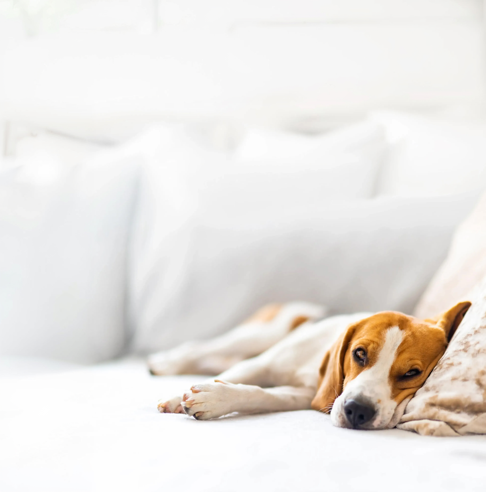
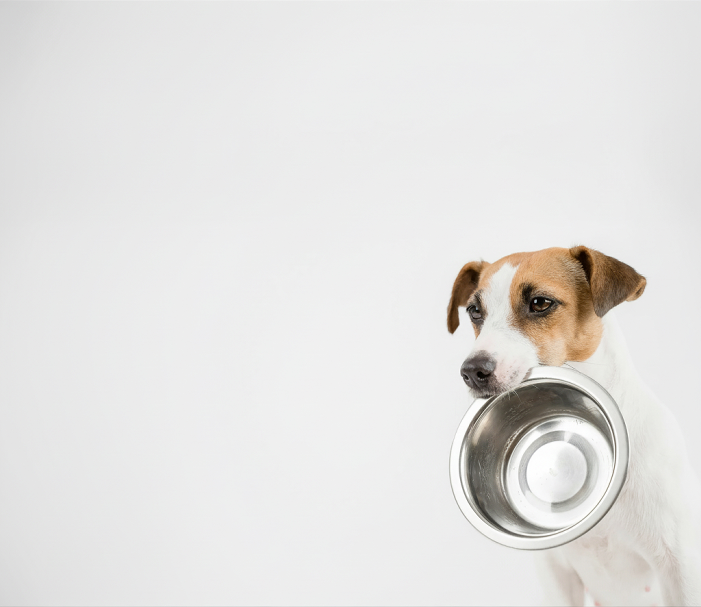

Una cosa per ogni pelosetto
I Pelosetti di Silvana è un’organizzazione di volontariato che, con passione e dedizione, si impegna ogni giorno a offrire supporto e trovare una casa per tutti quei pelosetti che sono stati lasciati soli.
